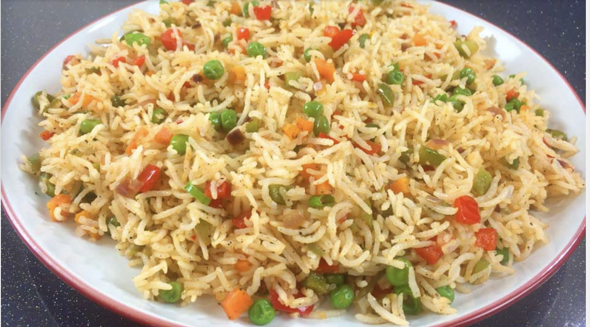

Fried Rice Recipe

Description
Create a delicious meal of fried rice for you and the family to enjoy during the holidays or an special occasion.
Ingredients
- Some pieces of Carrots
- Buds of Green Peas
- Spring Onions
- Yellow Bell Peppers
- Green Bell Peppers
- Red Bell Peppers
- Black Pepper
- Rice
- Vegetable Oil
- Salt
- Butter/Magarine
- Ginger
- shrimp
- Any other protein of your choice
Steps
- Cut all vegetables and prepare them for the sauce
- Wash your rice and leave it to parboil before putting it in a seive to drain water
- While the rice is parboiling, get ready to make the vegetable sauce
- Put Vegetable oil into a Frying pan and heat up lightly
- Turn all chopped Vegetables into the heated pan and stir fry for a while
- Add all spices into the frying pan till the sauce is to your tasting
- Remove the vegetable sause from the fire and turn it into a pot big enough to mix your rice
- Turn parboiled rice into Pot containing vegetables and turn on the heat on the pot
- Mix the rice and the sauce till a consistent texture is attained
- Add enough water to cook the rice to desired texture.